Osiedle Wilno, ul. Janowiecka 29B, Warszawa
*English version below
Na sprzedaż nowoczesne 3-pokojowe mieszkanie 60 m² z ogródkiem i tarasem.
Parter w budynku z 2020 roku, wysoki standard wykończenia, gotowe do zamieszkania od razu.
Świetna lokalizacja: 6 minut do stacji KM Zacisze-Wilno, autobusy 170 i 156, pełna infrastruktura w pobliżu — sklepy, szkoły, przedszkola.
Ważna informacja: możliwość sprzedaży mieszkania obcokrajowcom spoza UE.
-----------------------------------------
For sale: a modern 3-room apartment with 60 m2 of living space, featuring a private garden and terrace.
Located on the ground floor of a 2020 building, finished to a high standard and ready to move in.
Great location: 6 minutes on foot to KM Zacisze-Wilno, bus lines 170 and 156, full local infrastructure including shops, schools and kindergartens.
Important information: the apartment can be purchased by a non-EU foreigner.
Feel free to contact me
Zapraszam do kontaktu
Jacek Cesarski – Lemon Estate
Tel. 530 939 958


 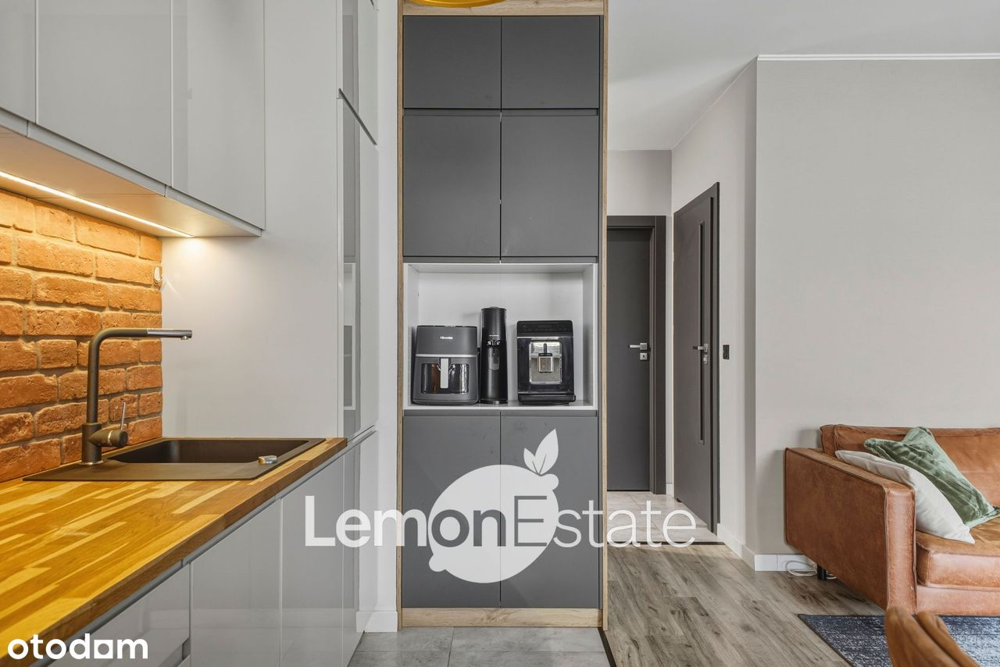
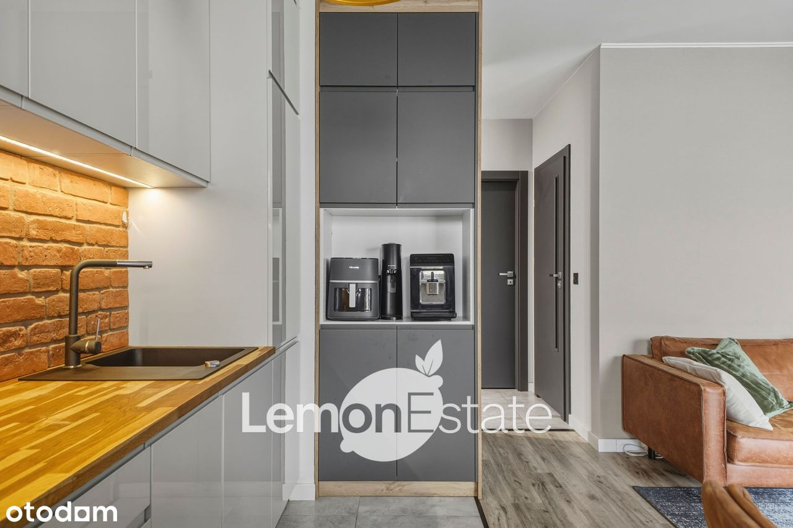
 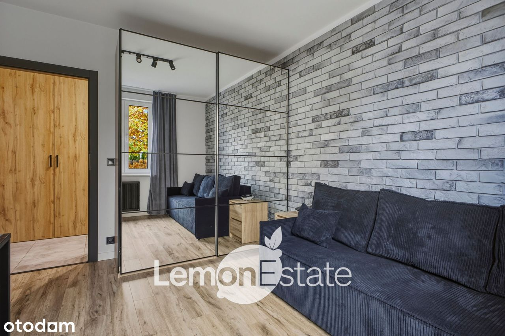
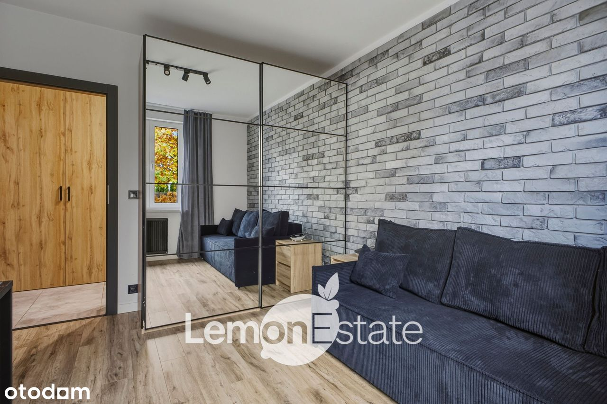 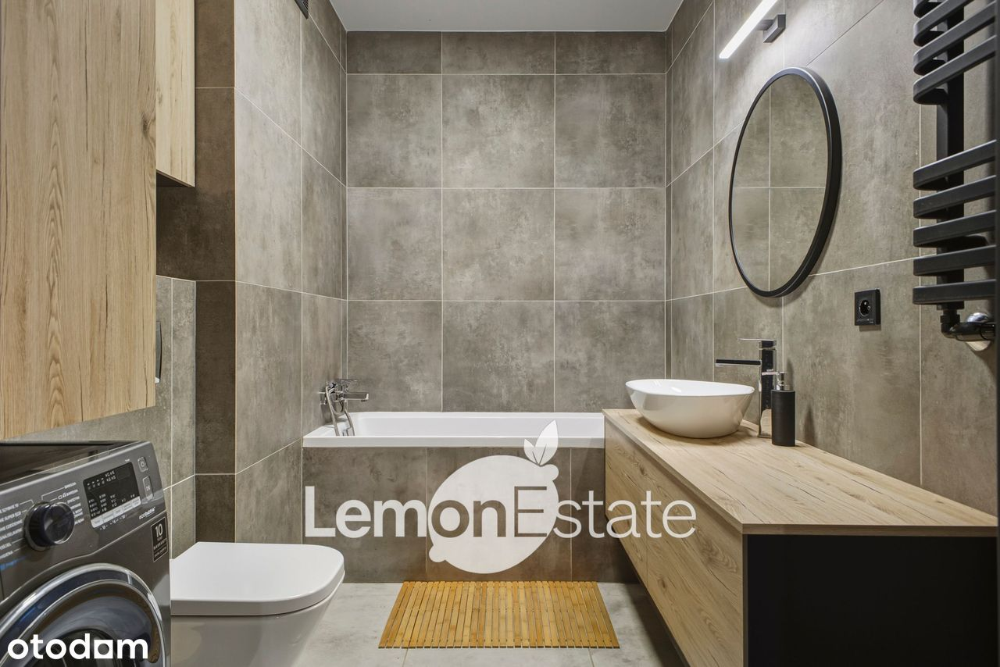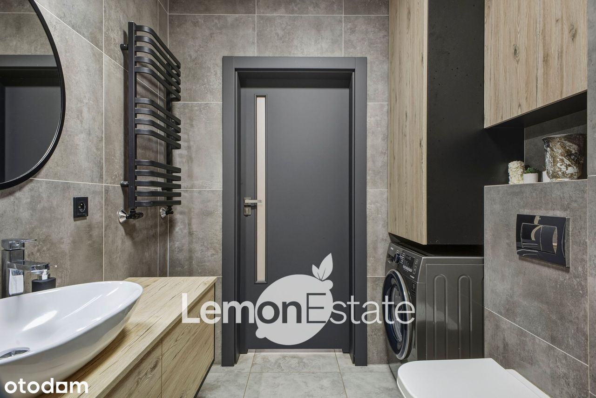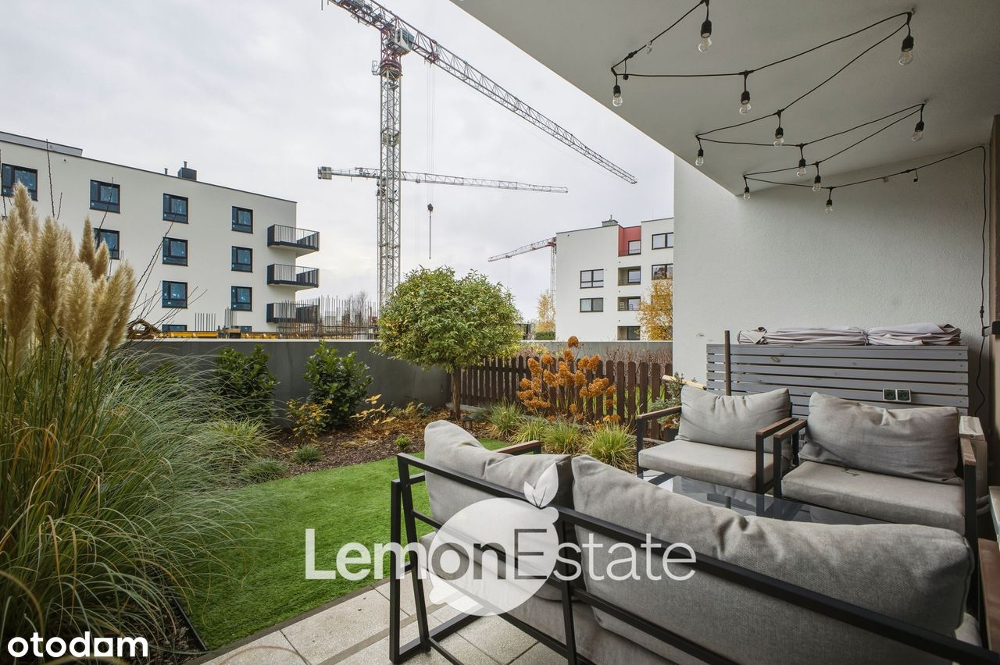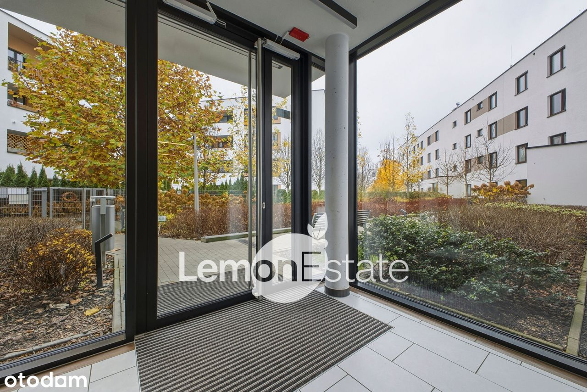
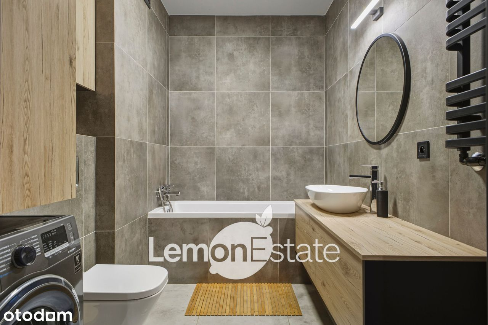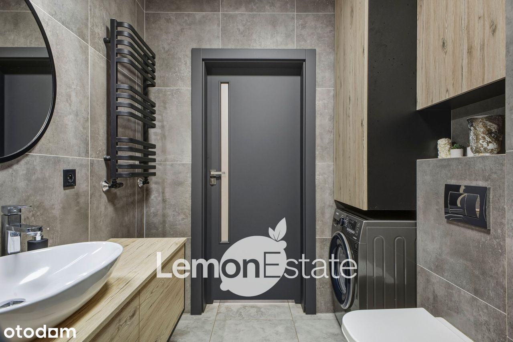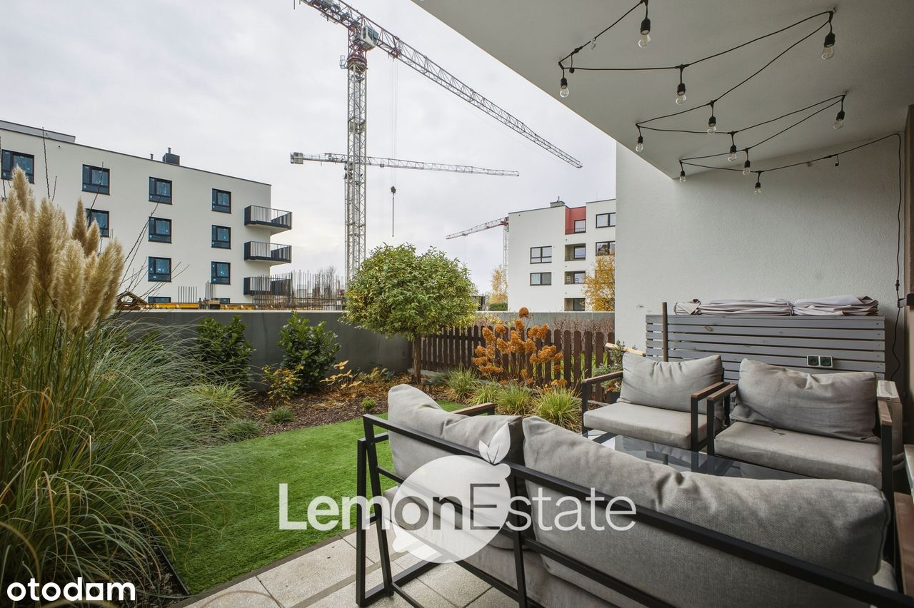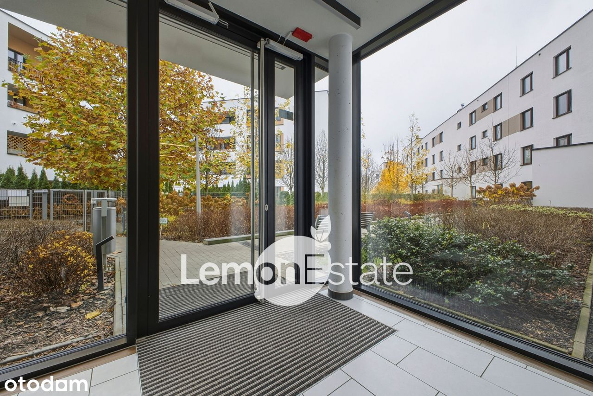
 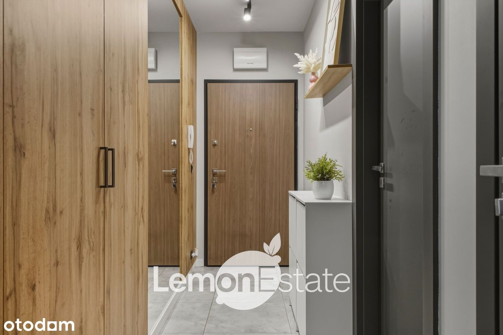
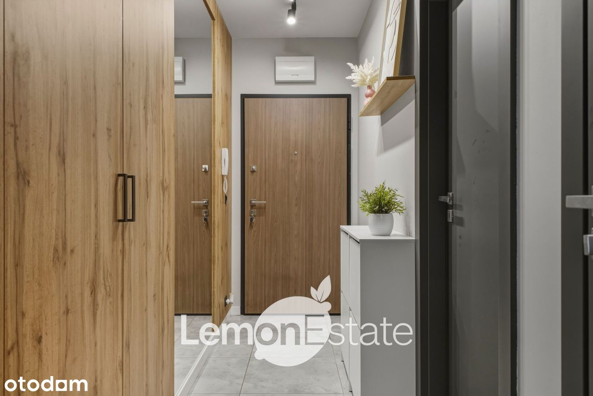